PhD in Biology 2023–Current
The University of Western Ontario (UWO)
Thesis: Integrated Pest Management of Spider Mites
Supervisor: Dr. Vojislava Grbić
I have committed my education and career to studying insects, with a primary focus on integrated pest management of arthropods in agriculture.
I am an entomologist with expertise in insect field ecology and integrated pest management. Currently, I am pursuing a PhD in Biology, using molecular techniques to identify, analyze, and manage the genetic diversity and pesticide resistance of spider mites in southwestern Ontario. My research focuses on characterizing new species and developing advanced RNAi-based alternatives to tailor sustainable pest and resistance management strategies.
Download CV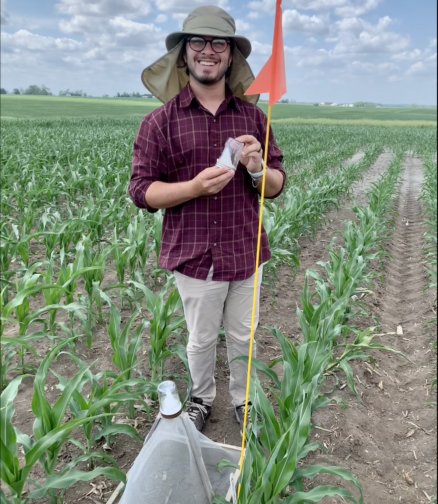
The University of Western Ontario (UWO)
Thesis: Integrated Pest Management of Spider Mites
Supervisor: Dr. Vojislava Grbić

University of Nebraska-Lincoln (UNL)
Thesis: Soybean Gall Midge Abundance
Supervisor: Dr. Justin McMechan
Universidade Federal de Viçosa (UFV)
Thesis: Whitefly (Bemisia tabaci) Sampling
Supervisor: Dr. Marcelo Picanco
Some photos of my journey.
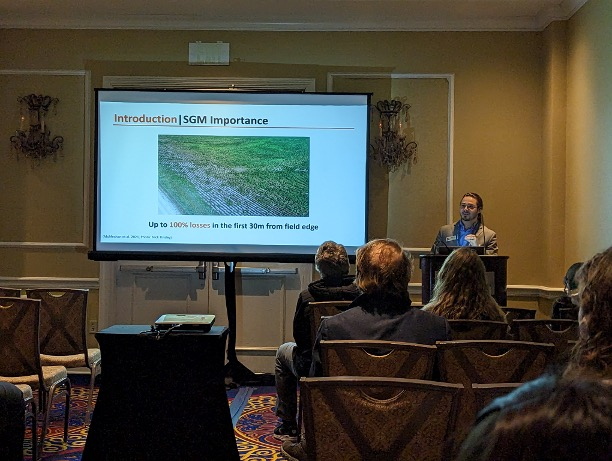
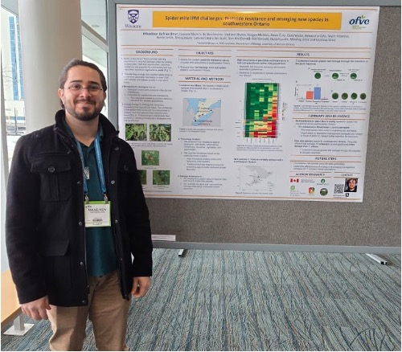
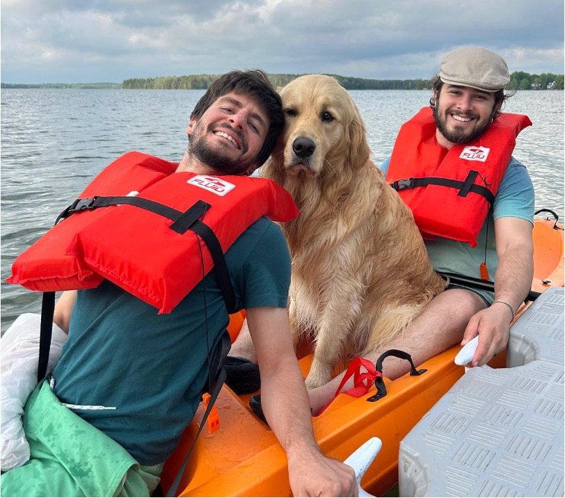
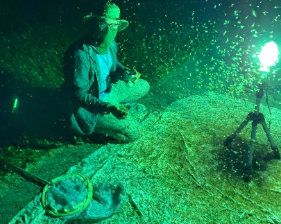
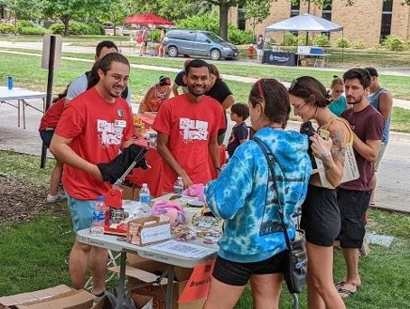
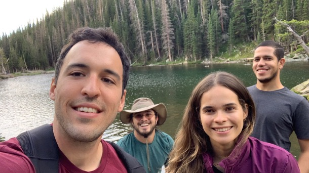
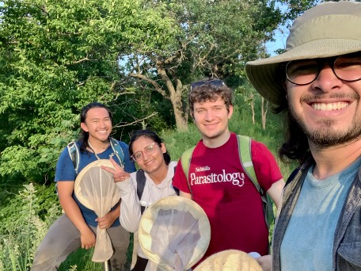
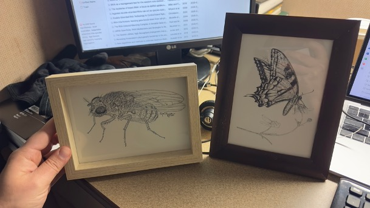
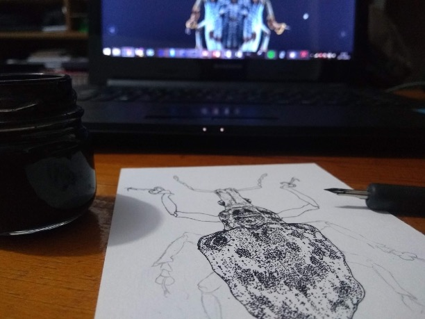
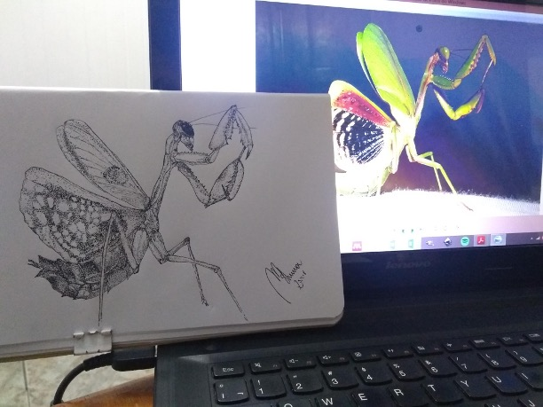

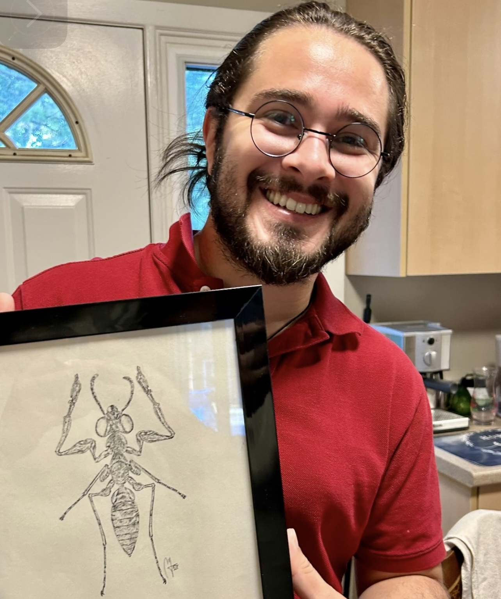
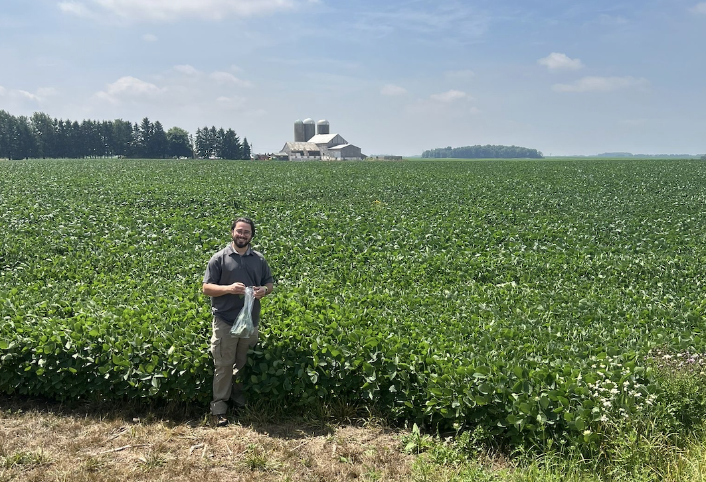

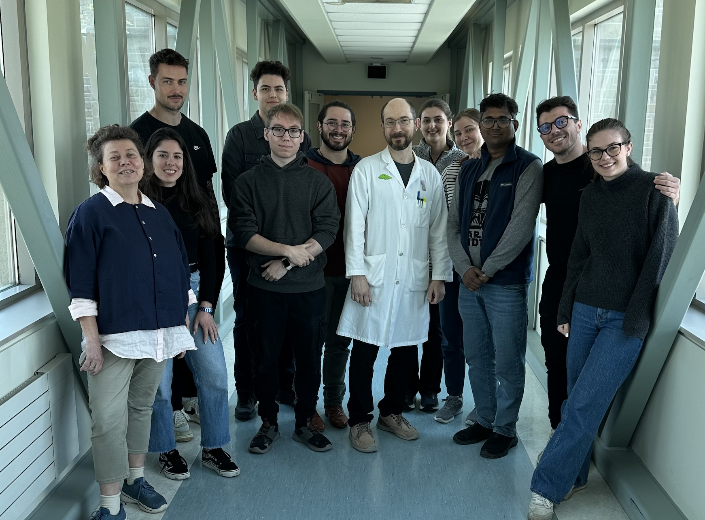
The gallery advances automatically. You can also use the arrows or click an image to enlarge it.